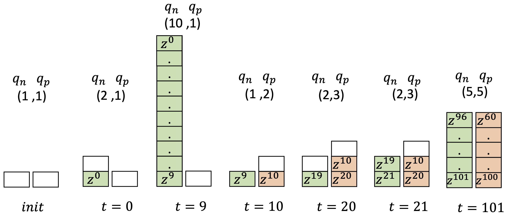
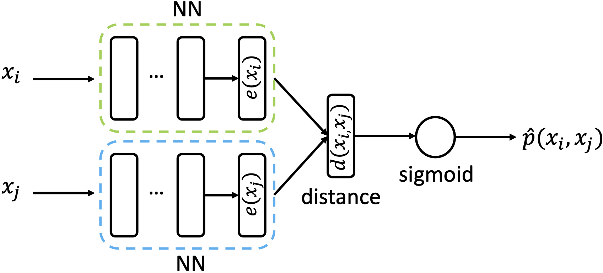
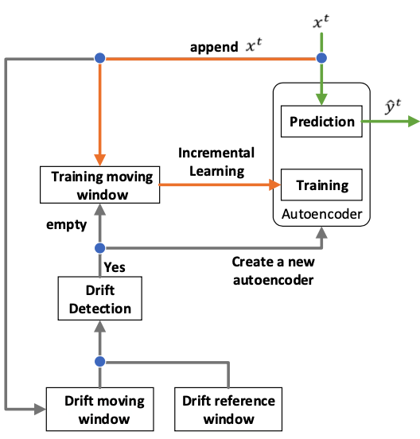
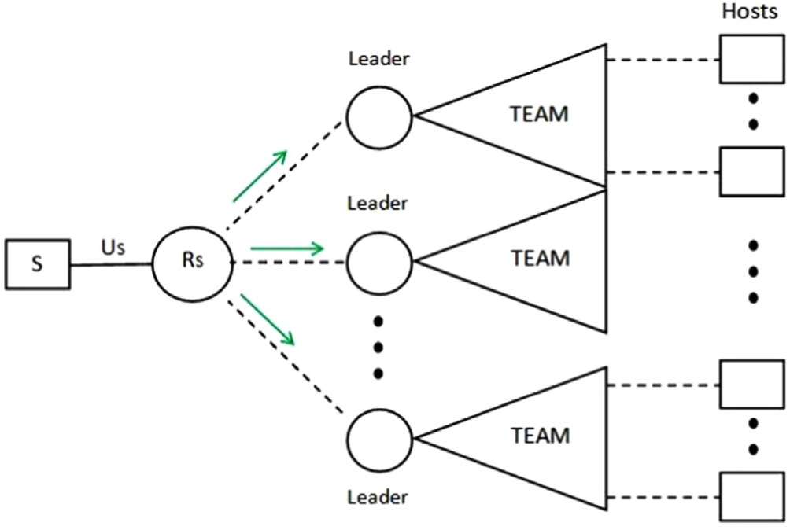

Research areas
My research interests lie within the areas of learning from nonstationary, limited-labelled, and imbalanced data streams with applications in monitoring of critical infrastructures and in healthcare.
I'm also interested in reinforcement learning and multiagent coordination with applications in intrusion detection and response (DDoS attacks), and in congestions problems.
Below is a list of areas that I have worked or have been working in, along with a short description, representative publications and code.

Learning from imbalanced data streams

Learning in nonstationary environments constitutes a major challenge, and this problem becomes orders of magnitude more complex in the presence of class imbalance. Learning from nonstationary and imbalanced data has been studied separately, but many key challenges remain open when the joint problem is considered.
Representative publications: IEEE TNNLS 2020 [pdf] [code], IEEE SSCI 2022 [pdf], ICANN 2018 [pdf] [code]

Active learning from data streams

Apart from data nonstationarity (concept drift) and class imbalance, acquiring ground truth information (e.g., labels in classification tasks) as instances arrive one-by-one can be costly or impossible in some real-time applications. An effective way to deal with limited labelled data is the active learning paradigm.
Representative publications: Neurocomputing 2022 [pdf] [code], IEEE WCCI (IJCNN) 2020 [pdf], IEEE SSCI 2022 [pdf] [code]
Anomaly detection in data streams

The generation of vast amounts of streaming data in various domains has become ubiquitous. However, many of these data are unlabeled, making it challenging to identify infrequent events, particularly anomalies. This task becomes even more formidable in nonstationary environments where model performance can deteriorate over time due to concept drift. To address these challenges, we propose autoencoder-based incremental learning and concept drift detection mechanisms.
Representative publications: IEEE WCCI (IJCNN) 2024 [pdf], IEEE IJCNN 2023 [pdf], IEEE SSCI 2023 [pdf]
Multiagent reinforcement learning for intrusion detection and response

One of the most serious threats in the current Internet is posed by distributed denial of service (DDoS) attacks, which target the availability of the victim system. They are designed to exhaust a server's resources or congest a network's infrastructure, and therefore renders the victim incapable of providing services to its legitimate users. To address the nature of these attacks, a distributed and coordinated defence mechanism is necessary, where many defensive nodes, across different locations cooperate in order to stop or reduce the flood. We propose the use of multiagent reinforcement learning to address the problem.
Representative publications: EAAI 2015 [pdf] (Department's Best Student Paper 2015 Award), Connection Science 2015 [pdf], AAAI / IAAI 2013 [pdf], AAMAS 2016 [pdf] [code], EUMAS 2013 [pdf], PhD thesis [pdf]